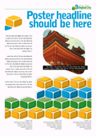
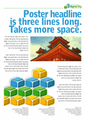
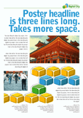
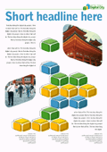
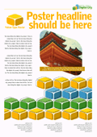
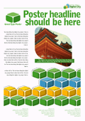
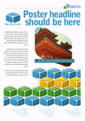
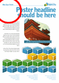
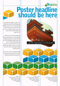
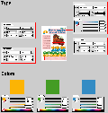

| logos + poster | |||
|
logo |
 general poster | ||
| alternate layouts of poster | |||
| i did these to show that the grid is flexible for different amounts of text and photographs. and to show alternate ways to use the colorful background blocks. | |||
|
 alternate layout 1 |
 alternate layout 2 |
 alternate layout 3 | |
| 3 poster colors, for different uses | |||
|
 yellow |
 green |
 blue |
 blue, version2: if it's necessary to move the poster type title. |
| specifications, gird, and files | |||
| this information and these files should be useful to the person who uses these files to create a poster. | |||
|
 grid |
 specs |
Adobe Illustrator poster template files (all 3 colors), zipped: posters.ZIP | |